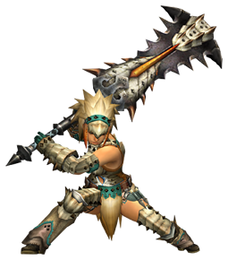

大劍
出自多玩《怪物獵人P3》數據庫
 武器：太刀 - 大劍 - 片手劍 - 斬擊斧 - 雙刀 - 錘子 - 長槍 - 銃槍 - 狩獵笛 - 弓 - 輕弩 - 重弩
武器：太刀 - 大劍 - 片手劍 - 斬擊斧 - 雙刀 - 錘子 - 長槍 - 銃槍 - 狩獵笛 - 弓 - 輕弩 - 重弩
|  |
|
註：
1，武器名稱前的小圖示
 分別代表稀有度1-7
分別代表稀有度1-7
2，點選武器名稱可以檢視其詳細資料（目前完善中）
3，等級標註為「上位*」的武器雖然等級是上位，但是因為靈鶴石在下位農場就能採集到，所以下位也可以製作
武器派生
古結云派生系
| 武器 | 稀有度 | 攻擊 | 附加效果 | 斬味 | 孔 | 等級 |
| ■古結云大劍派生 | ||||||
| 古結云大劍
| 1 | 50 | - | - - - | 下位 | |
| ┗ 結云大劍
| 1 | 70 | - | - - - | 下位 | |
| ┣ 結云大劍改
| 1 | 90 | - | - - - | 下位 | |
| ┃ ┣ 結云巨劍
| 2 | 130 | - | - - - | 下位 | |
| ┃ ┗ 41式對飛龍大劍 | 3 | 140 | 防禦力+16 水20 | - - - | 下位 | |
| ┃ ┗ 41式對飛龍大劍改 | 5 | 190 | 防禦力+20 水25 | - - - | 上位 | |
| ┃ ┗ 軍神甲刃 | 6 | 210 | 防禦力+24 水32 | - - - | 上位 | |
| ┣ 巨劍
| 1 | 80 | - | - - - | 下位 | |
| ┃ ┗ 巨劍改
| 1 | 110 | - | - - - | 下位 | |
| ┃ ┗ 巨刃
| 2 | 130 | - | O - - | 下位 | |
| ┃ ┗ 爆裂刀
| 2 | 140 | 防禦力+12 會心率 5% | O - - | 下位 | |
| ┃ ┣ 爆裂刀改 | 3 | 170 | 防禦力+16 會心率 5% | O - - | 下位 | |
| ┃ ┃ ┣ 靈鶴大劍 | 4 | 180 | - | O O - | 上位* | |
| ┃ ┃ ┃ ┗ 靈鶴大劍改 | 5 | 200 | - | O O - | 上位 | |
| ┃ ┃ ┗ 爆錘大劍 | 4 | 200 | 防禦力+30 | - - - | 上位 | |
| ┃ ┃ ┗ 爆錘大劍改 | 5 | 220 | 防禦力+35 | - - - | 上位 | |
| ┃ ┃ ┗ 紅蓮爆錘大劍 | 6 | 240 | 防禦力+40 | - - - | 上位 | |
| ┃ ┗ 紅蓮炎魄劍 | 3 | 150 | 會心率 30% | - - - | 下位 | |
| ┃ ┗ 暗夜劍【宵暗】 | 6 | 190 | 會心率 35% | O O - | 上位 | |
| ┗ 狂暴大劍
| 1 | 100 | - | O - - | 下位 | |
| ┣ 族長大劍
| 2 | 120 | - | O O - | 下位 | |
| ┃ ┗ 族長大劍【我王】 | 4 | 190 | - | O O O | 上位 | |
| ┗ 土砂龍大劍
| 2 | 150 | 會心率 -30% | - - - | 下位 | |
| ┣ 土砂龍巨刃 | 3 | 190 | 會心率 -30% | - - - | 下位 | |
| ┃ ┗ 土砂龍巨刃改 | 6 | 220 | 會心率 -50% | - - - | 上位 | |
| ┃ ┗ 黎明女神大劍 | 5 | 200 | 會心率 -30% 冰20 | O - - | 上位 | |
| ┃ ┗ 北極光大劍 | 6 | 220 | 會心率 -30% 冰25 | O - - | 上位 | |
| ┗ 轟龍鄂刀 | 3 | 170 | 會心率 -25% | - - - | 下位 | |
| ┗ 轟龍鄂刀改 | 4 | 180 | 會心率 -25% | - - - | 上位 | |
| ┣ 轟大劍【王虎】 | 6 | 220 | 會心率 -15% | O - - | 上位 | |
| ┗ 暴君大劍 | 5 | 200 | 會心率 -20% | O O - | 上位 | |
| ┗ 吼大劍【荒咬】 | 6 | 230 | 會心率 -30% | O O - | 上位 |
巨骨刀派生系
| 武器 | 稀有度 | 攻擊 | 附加效果 | 斬味 | 孔 | 等級 |
| ■巨骨刀派生 | ||||||
| 巨骨刀
| 1 | 90 | - | - - - | 下位 | |
| ┣ 巨骨刀改
| 1 | 120 | - | - - - | 下位 | |
| ┃ ┗ 大骨劍
| 2 | 140 | - | - - - | 下位 | |
| ┃ ┣ 巨像刃
| 2 | 150 | - | O - - | 下位 | |
| ┃ ┃ ┣ 巨像刃改 | 3 | 180 | - | O O - | 下位 | |
| ┃ ┃ ┃ ┣ 剛劍塔羅斯 | 5 | 210 | - | O O - | 上位 | |
| ┃ ┃ ┃ ┗ 顎刀 | 4 | 190 | - | O - - | 上位 | |
| ┃ ┃ ┃ ┗ 大顎刀 | 5 | 210 | - | O - - | 上位 | |
| ┃ ┃ ┃ ┗ 龍之顎 | 6 | 220 | - | O - - | 上位 | |
| ┃ ┃ ┗ 瓦爾基里之刃
| 2 | 140 | 毒24 | - - - | 下位 | |
| ┃ ┃ ┣ 吉克琳達 | 3 | 160 | 毒28 | O - - | 下位 | |
| ┃ ┃ ┃ ┗ 高吉克琳達 | 6 | 200 | 毒32 | O O - | 上位 | |
| ┃ ┃ ┗ 齊格蒙大劍 | 5 | 200 | 會心率 5% | O - - | 上位 | |
| ┃ ┃ ┗ 高齊格蒙大劍 | 6 | 220 | 會心率 5% | O - - | 上位 | |
| ┃ ┗ 紅翼 | 3 | 160 | 火30 | - - - | 下位 | |
| ┃ ┗ 炎劍雄火龍 | 4 | 180 | 火38 | O - - | 上位 | |
| ┃ ┗ 焰劍雄火龍 | 6 | 190 | 火42 | O - - | 上位 | |
| ┃ ┗ 輝劍雄火龍 | 7 | 200 | 火56 | O - - | 上位 | |
| ┗ 水流大劍
| 1 | 110 | - | O - - | 下位 | |
| ┣ 暴雨大劍
| 2 | 130 | 水32 | O - - | 下位 | |
| ┃ ┗ 暴雨大劍改 | 3 | 150 | 水38 | O - - | 下位 | |
| ┃ ┗ 暴雨巨刃 | 5 | 180 | 水45 | O O - | 上位 | |
| ┣ 喧鬧之角 | 3 | 190 | 防禦力+8 會心率 -25% | - - - | 下位 | |
| ┃ ┗ 喧鬧之角改 | 4 | 210 | 防禦力+12 會心率 -20% | - - - | 上位 | |
| ┃ ┗ 剛角劍角龍 | 6 | 230 | 防禦力+16 會心率 -20% | - - - | 上位 | |
| ┗ 冰霜巨牙 | 3 | 140 | 會心率 30% 冰30 | - - - | 下位 | |
| ┣ 冰霜巨牙改 | 5 | 160 | 會心率 30% 冰45 | - - - | 上位 | |
| ┃ ┗ 冰霜騎士巨劍 | 6 | 180 | 會心率 35% 冰55 | - - - | 上位 | |
| ┗ 蓋亞衝擊 | 5 | 170 | 會心率 10% | - - - | 上位 | |
| ┗ 暴砂劍蠻砂吞噬 | 6 | 190 | 會心率 10% | - - - | 上位 |
狂戰士之劍派生系
| 武器 | 稀有度 | 攻擊 | 附加效果 | 斬味 | 孔 | 等級 |
| ■狂戰士之劍派生 | ||||||
| 狂戰士之劍 | 5 | 180 | 會心率 5% 龍12 | - - - | 上位 | |
| ┗ 悲慟一殤 | 7 | 210 | 會心率 10% 龍20 | O - - | 上位 |
熔巖烈劍派生系
| 武器 | 稀有度 | 攻擊 | 附加效果 | 斬味 | 孔 | 等級 |
| ■熔巖烈劍派生 | ||||||
| 熔巖烈劍
| 2 | 130 | - | O - - | 下位 | |
| ┗ 熔巖烈劍改 | 3 | 140 | - | O O - | 下位 | |
| ┗ 爆裂熔巖烈劍 | 6 | 190 | 會心率 15% | O O O | 上位 |
腐銹大劍派生系
| 武器 | 稀有度 | 攻擊 | 附加效果 | 斬味 | 孔 | 等級 |
| ■腐銹大劍派生 | ||||||
| 腐銹大劍
| 1 | 100 | 會心率 -70% | - - - | 下位 | |
| ┗ 銹大劍
| 1 | 100 | 會心率 -70% | - - - | 下位 | |
| ┗ 遠古之刃 | 3 | 150 | 龍33 | - - - | 下位 | |
| ┗ 遠古祭奠 | 5 | 180 | 龍35 | - - - | 上位 |
風化嚴重的大劍派生系
| 武器 | 稀有度 | 攻擊 | 附加效果 | 斬味 | 孔 | 等級 |
| ■風化嚴重的大劍派生 | ||||||
| 風化嚴重的大劍 | 4 | 110 | 會心率 -70% | - - - | 上位 | |
| ┗ 風蝕大劍 | 4 | 110 | 會心率 -70% | - - - | 上位 | |
| ┗ 墓誌銘 | 6 | 200 | 會心率 -10% 龍38 | - - - | 上位 |
毒龍之刃派生系
| 武器 | 稀有度 | 攻擊 | 附加效果 | 斬味 | 孔 | 等級 |
| ■毒龍之刃派生 | ||||||
| 毒龍之刃
| 2 | 100 | 毒30 | - - - | 下位 | |
| ┗ 毒斷馬修羅格巨刃 | 5 | 150 | 毒50 | - - - | 上位 |
番傘【秋雨】派生系
| 武器 | 稀有度 | 攻擊 | 附加效果 | 斬味 | 孔 | 等級 |
| ■番傘【秋雨】派生 | ||||||
| 番傘【秋雨】 | 3 | 130 | - | O O O | 下位 | |
| ┗ 番傘【斬雨】 | 5 | 180 | - | O O O | 上位 |
真結云大劍派生系
| 武器 | 稀有度 | 攻擊 | 附加效果 | 斬味 | 孔 | 等級 |
| ■真結云大劍派生 | ||||||
| 真結云大劍 | 3 | 160 | - | - - - | 下位 | |
| ┗ 真結云大劍改 | 4 | 190 | - | - - - | 上位 | |
| ┗ 結云大斬劍【雲散】 | 6 | 210 | - | - - - | 上位 |
王大劍派生系
| 武器 | 稀有度 | 攻擊 | 附加效果 | 斬味 | 孔 | 等級 |
| ■王大劍風來派生 | ||||||
| 王大劍風來 | 3 | 160 | 雷30 | O - - | 下位 | |
| ┗ 王牙大劍【黑雷】 | 6 | 210 | 雷35 | O - - | 上位 |
兇劍【叢云】派生系
| 武器 | 稀有度 | 攻擊 | 附加效果 | 斬味 | 孔 | 等級 |
| ■兇劍【叢云】派生 | ||||||
| 兇劍【叢云】 | 7 | 240 | 會心率 -20% 水16 | - - - | 上位 |
霸劍·黑帝裂荊派生系
| 武器 | 稀有度 | 攻擊 | 附加效果 | 斬味 | 孔 | 等級 |
| ■霸劍·黑帝裂荊派生 | ||||||
| 霸劍·黑帝裂荊 | 7 | 250 | 會心率 45% | - - - | 上位 |
崩劍·天怒冰川派生系
| 武器 | 稀有度 | 攻擊 | 附加效果 | 斬味 | 孔 | 等級 |
| ■崩劍·天怒冰川派生 | ||||||
| 崩劍·天怒冰川 | 7 | 250 | 防禦力+15 會心率 -20% 冰20 | - - - | 上位 |
煌黑大劍派生系
| 武器 | 稀有度 | 攻擊 | 附加效果 | 斬味 | 孔 | 等級 |
| ■煌黑大劍派生 | ||||||
| 煌黑大劍 | 6 | 170 | 龍40 | O - - | 上位 | |
| ┗ 煌黑大劍·兇天煞 | 7 | 190 | 龍45 | O O - | 上位 |
真·轟斷劍派生系
| 武器 | 稀有度 | 攻擊 | 附加效果 | 斬味 | 孔 | 等級 |
| ■真·轟斷劍派生 | ||||||
| 真·轟斷劍 | 6 | 210 | - | O O - | 配信 |
破魔劍派生系
| 武器 | 稀有度 | 攻擊 | 附加效果 | 斬味 | 孔 | 等級 |
| ■破魔劍派生 | ||||||
| 破魔劍 | 3 | 140 | 防禦力+8 會心率 10% 雷50 | - - - | 配信 | |
| ┗ 天魔劍 | 6 | 180 | 防禦力+10 會心率 15% 雷60 | - - - | 配信 |
大劍攻略心得
圖文
| · 小巧騰挪——大劍拍擊技能使用技巧詳解 | 2010.10.22 |
| · 經過一番折騰正式宣佈下：煌黑大劍成為最強大劍 | 2010.12.20 |
| · 最強眠斬大劍誕生！？答案延期公佈~視訊製作中 | 2011.01.03 |
| · | >>更多 |
視訊
| · 【視訊】大劍黑轟基礎教學視訊 | 2010.12.24 |
| · | >>更多 |
武器：太刀 - 大劍 - 片手劍 - 斬擊斧 - 雙刀 - 錘子 - 長槍 - 銃槍 - 狩獵笛 - 弓 - 輕弩 - 重弩